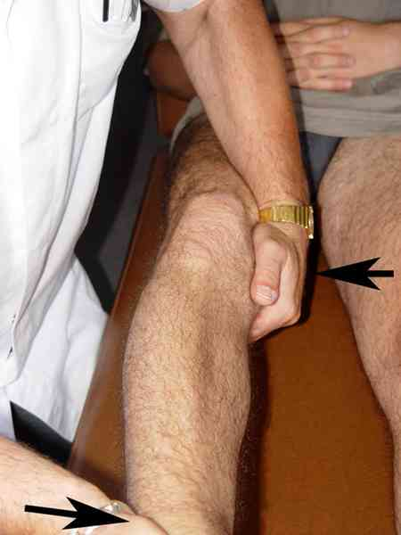
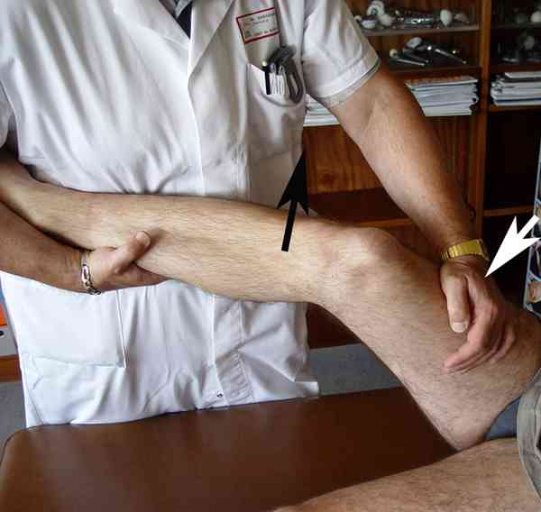

Bienvenue Sur Medical Education
Contusions du genou
Spécialité : traumatologie /
Points importants
-
Toute contusion du genou s'accompagne d'une trace de l'impact et il faut la rechercher
-
Toute contusion peut s'accompagner d'une lésion intra-articulaire :
-
rupture du LCP (choc antérieur sur l'extrémité proximale du tibia)
-
rupture du LCA (choc postérieur sur l'extrémité proximale du tibia)
-
rupture du LLI voire plus, en cas de choc sur la face externe du genou
-
luxation de la rotule
-
lésion méniscale
-
etc.
-
D'où la grande règle de l'examen complet et systématique avec également des radios systématiques :
-
cette prescription semble actuellement controversée car beaucoup de radios seraient négatives
-
une radio « normale » n'est pas forcément normale pour tout le monde et quand bien même elle serait normale, elle joue un rôle non négligeable dans le diagnostic différentiel
- rupture du LCP (choc antérieur sur l'extrémité proximale du tibia)
- rupture du LCA (choc postérieur sur l'extrémité proximale du tibia)
- rupture du LLI voire plus, en cas de choc sur la face externe du genou
- luxation de la rotule
- lésion méniscale
- etc.
- cette prescription semble actuellement controversée car beaucoup de radios seraient négatives
- une radio « normale » n'est pas forcément normale pour tout le monde et quand bien même elle serait normale, elle joue un rôle non négligeable dans le diagnostic différentiel
_551 Photo Fracture avec enfoncement très localisé du plateau tibial externe
_552 Photo Fracture avec enfoncement très localisé du plateau tibial externe
Présentation clinique / CIMU
CONTEXTE
Circonstances de survenue
- Il s'agit d'un choc direct en regard de la rotule (pas de torsion)
EXAMEN CLINIQUE
 _419
_419
 _420
_420
 _555
_555
-
laxité en valgus témoin d'une lésion du LLI
-
 _425
Photo
Recherche d'une laxité interne en valgus-flexion
_425
Photo
Recherche d'une laxité interne en valgus-flexion
-
-
laxité en varus témoin d'une lésion du LLE
-  _426 Photo Recherche d'une laxité externe en varus-flexion
-
tiroir antérieur, pied en position neutre, en rotation externe et en rotation interne, témoin d'une rupture du LCA souvent associée à des lésions du plan interne (majoration du tiroir pied en rotation externe)
-
 _427
Photo
Recherche du tiroir antérieur en flexion
_427
Photo
Recherche du tiroir antérieur en flexion
-
- tiroir postérieur qui est souvent un « faux tiroir antérieur » dû à la réduction d'une position en tiroir postérieur spontané (avalement de la TTA), témoin d'une rupture du LCP
- tiroir antéro-postérieur de grande amplitude témoin d'une rupture des 2 ligaments croisés
Tests spécifiques
- Le ressaut antéro-externe (jerk test, pivot shift), pathognomonique d'une rupture du LCA. Il se recherche pied en rotation externe (jerk test), pied en rotation interne (test de Lemaire) ou pied en rotation indifférente (test de Dejour)
 _428 Photo Manoeuvre de Dejour
- Le signe de Smillie correspond à une appréhension lorsque l'on essaie de luxer la rotule en fléchissant progressivement le genou en partant de l'extension. Ce signe peut être positif en cas de luxation spontanément réduite de la rotule
 _429
Photo
Manoeuvre de Smillie
_429
Photo
Manoeuvre de Smillie
Rechercher systématiquement une lésion intra-articulaire
- Rupture du LCP (choc antérieur sur l'extrémité proximale du tibia)
- Rupture du LCA (choc postérieur sur l'extrémité proximale du tibia)
- Rupture du LLI voire plus, en cas de choc sur la face externe du genou
- Luxation de la rotule
- Lésion méniscale
Au total
-
Le genou est facile à examiner :
- il y a peu de problèmes pour faire le diagnostic
-
Le genou est difficile à examiner :
-
attelle, AINS, antalgiques et nouvel examen 8 jours plus tard :
- soit pour confirmer le diagnostic de contusion
- soit pour découvrir une lésion non diagnostiquée en urgence
-
attelle, AINS, antalgiques et nouvel examen 8 jours plus tard :
Signes paracliniques
Radiographie
- Contrairement à l'attitude de certains qui pensent que l'on pourrait se passer de radiographies dans le cadre de l'urgence devant certains tableaux cliniques bien spécifiques, nous pensons que les radiographies standard sont indispensables à condition qu'elles soient bien réalisées et bien interprétées
- Il faut demander de principe, devant un genou peu ou moyennement douloureux, une incidence de face, un profil strict, un 3/4 interne et des défilés rotuliens à 30° de flexion
-
Ces clichés pourront certes être négatifs (c'est déjà un diagnostic !) mais pourront montrer :
- une gonarthrose débutante
- une dysplasie fémoro-patellaire
- un arrachement du massif des épines tibiales
- une fracture de Segond
- une ostéochondrite du genou
- une fracture-enfoncement du plateau tibial externe
- et pourquoi pas une tumeur du genou (combien de tumeurs de l'adolescent sont découvertes à l'occasion d'un traumatisme...)
- Il serait tout à fait regrettable de découvrir de telles lésions au cours d'examens beaucoup plus sophistiqués et coûteux ...
Traitement
TRAITEMENT INITIAL
-
Si impotence fonctionnelle totale : mettre une attelle rigide amovible non articulée
-
Si pas d'impotence : un pansement humide à l'alcool glycériné à renouveler 3 fois/jour pour 48 heures
MEDICAMENTS
-
Antalgiques en fonction de l'intensité douloureuse mesurée par l'EN ou l'EVA
-
Protocole RICE
Devenir / orientation
CRITERES D'ADMISSION
-
Pas de critères évidents sauf si patient très hyperalgique, avec contexte social particulier (vit seul...), co-morbidité
CRITERES DE SORTIE
-
Sortie systématique sauf critère d'admission
ORDONNANCE DE SORTIE
-
Attelle amovible possible (ne pas dépasser une semaine) à préférer si hématome pré-rotulien important
-
Antalgique de palier 1 ou 2
-
AINS
-
Humidifier le pansement à l'alcool glycériné : à renouveler 3 fois/j pendant 48 heures
RECOMMANDATIONS DE SORTIE
-
Si le genou est difficile à examiner, demander au patient de revenir pour un nouvel examen 8 jours plus tard :
-
soit pour confirmer le diagnostic de contusion
-
soit pour découvrir une lésion non diagnostiquée en urgence
-
Habituellement tout rentre dans l'ordre en 10 à 15 jours
-
Surélever le genou au-dessus du plan de l'horizontal
-
Si aggravation, persistance douloureuse et impotence dans la semaine qui suit, revenir consulter
Bibliographie
-
Traumatologie à l'usage de l'urgentiste. Sous la direction de Dominique Saragaglia. Editions Sauramps Médical. 2004
Devenir / orientation
CRITERES D'ADMISSION
- Pas de critères évidents sauf si patient très hyperalgique, avec contexte social particulier (vit seul...), co-morbidité
CRITERES DE SORTIE
- Sortie systématique sauf critère d'admission
ORDONNANCE DE SORTIE
- Attelle amovible possible (ne pas dépasser une semaine) à préférer si hématome pré-rotulien important
- Antalgique de palier 1 ou 2
- AINS
- Humidifier le pansement à l'alcool glycériné : à renouveler 3 fois/j pendant 48 heures
RECOMMANDATIONS DE SORTIE
-
Si le genou est difficile à examiner, demander au patient de revenir pour un nouvel examen 8 jours plus tard :
- soit pour confirmer le diagnostic de contusion
- soit pour découvrir une lésion non diagnostiquée en urgence
- Habituellement tout rentre dans l'ordre en 10 à 15 jours
- Surélever le genou au-dessus du plan de l'horizontal
- Si aggravation, persistance douloureuse et impotence dans la semaine qui suit, revenir consulter
Bibliographie
-
Traumatologie à l'usage de l'urgentiste. Sous la direction de Dominique Saragaglia. Editions Sauramps Médical. 2004
Auteur(s) : Jean-Jacques BANIHACHEMI, Dominique SARAGAGLIA